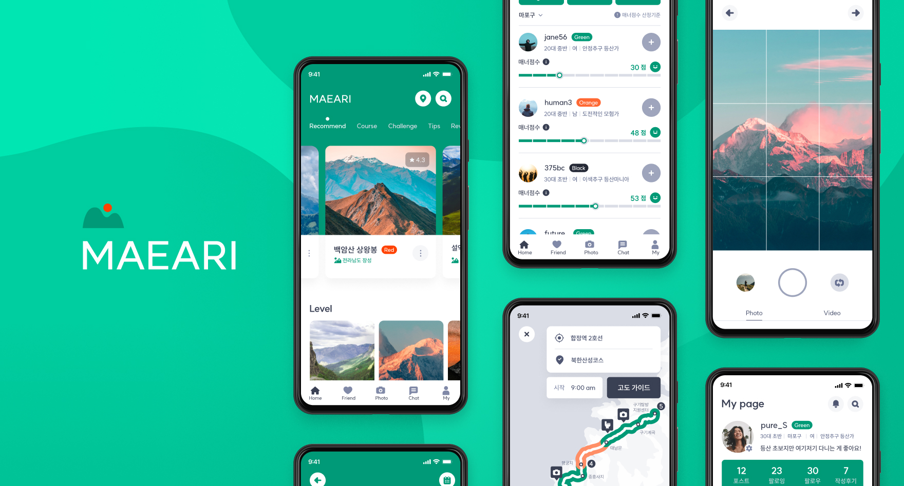
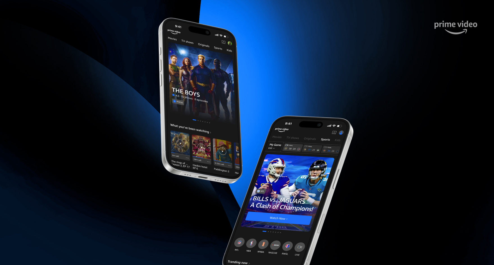
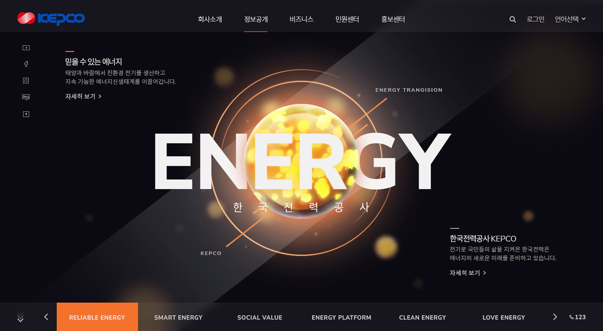

기획과 디자인 경험을 바탕으로 사용하기 편한 서비스를 고민하는 UX/UI 디자이너입니다. A UX/UI designer who draws on planning and design experience to create services that are intuitive and easy to use.
시각디자인을 전공하고 서비스 기획자로 일하며, 화면을 넘어 사용 경험을 고민해 왔습니다. Having majored in visual design and worked as a service planner, I've always thought beyond the screen — about the experience of using it.
서비스 운영과 기능 개선을 담당하며 현업의 요구사항을 분석하고 이를 와이어프레임과 스토리보드로 구체화했습니다. 개발 과정에서는 디자이너·개발자와 협업하고, 구현 이후에는 직접 사용 흐름과 기능을 검증했습니다. 이러한 경험을 바탕으로 비즈니스 요구사항과 사용자 경험을 함께 이해하는 UX/UI 디자이너로 성장하고자 합니다. While managing service operations and feature improvements, I analyzed business requirements and translated them into wireframes and storyboards. During development, I collaborated with designers and developers, and after launch, I personally verified the user flow and functionality. Building on this experience, I aim to grow as a UX/UI designer who understands both business requirements and user experience.
대기업 계열 임직원몰의 요구사항 정리부터 QA, 클라이언트 커뮤니케이션까지 유지보수를 담당했습니다. Handled maintenance for a corporate employee shopping platform — from requirement gathering to QA and client communication.
기획전·프로모션 이미지 제작 지원, 디자이너와 제작 방향 협업, 클라이언트 요구사항 반영 및 일정 관리, 결과물 검수.Supported production of campaign and promotional images, collaborated with designers on creative direction, managed client requirements and schedule, and reviewed final deliverables.
일정 관리·분배로 기획행사를 제때 오픈했고, 배너 등록 모니터링을 통해 운영 품질 향상에 기여했습니다.Coordinated scheduling to launch campaigns on time, and improved operational quality through banner registration monitoring.
요구사항 분석 및 기능 구체화, 와이어프레임·스토리보드 작성, 테스트 케이스 작성 및 QA, 배포 후 검증, 추출 데이터 검증·가공, CS팀과 협업한 장애 대응.Analyzed requirements and specified features, wrote wireframes and storyboards, created test cases and ran QA, verified releases, validated extracted data, and handled issues with the CS team.
운영 요청사항을 리스트로 체계화해 커뮤니케이션에 기여했고, 요구사항을 서비스 정책에 맞게 구체화한 기획 문서로 개발과 배포를 원활히 지원했습니다.Organized operational requests into structured lists to improve communication, and supported smooth development and releases with planning documents aligned to service policy.
Behance에 게재된 UX/UI 기획 프로젝트입니다. 카드를 클릭하면 상세 페이지로 이동합니다. UX/UI planning projects published on Behance. Click a card to view the full case study.



실무 역량을 키운 교육 이수 내역과 취득한 자격, 수상 내역입니다. Courses, certifications, and awards that shaped my practical skills.